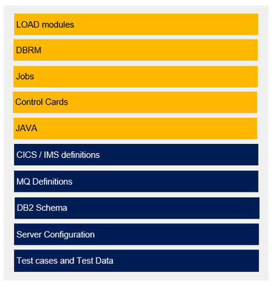
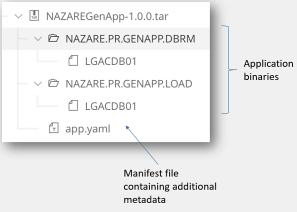
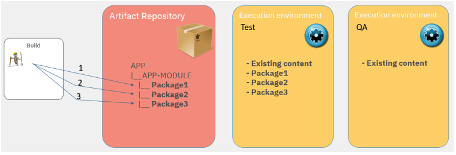
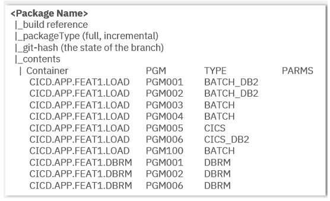

Architecting the pipeline strategy
Building, packaging, and deploying in a pipeline
A continuous integration/continuous delivery (CI/CD) pipeline removes the manual tasks of defining a package. This task is now fully automated and occurs once the application is built.
It is typical to have multiple packages, with each package being expected to have passed automated quality gate testing. Not all packages will make it to production due to discovered defects.
Because the creation of a package most likely occurs at the application component level, the source code management (SCM) layout also has an impact on the packaging.
Technically, a package is mainly composed of a list of binaries or files. However, it also includes metadata for the deployment manager. Using the metadata and a defined process, the deployment manager knows how to treat each element of the package during rollout.
It is important, especially for build outputs on mainframes, to keep track of each’s element type. For example, during the deployment phase, a CICS program will require different handling than a plain batch program. The same applies for programs using Db2. Therefore, the metadata associated with each artifact should provide a “deploy type”. This type indicates the nature of the artifact and is used to drive the appropriate process when deploying the artifact.
Package content and layout
It is imperative that you consider build outputs as part of your package. Examples of these items are highlighted in yellow in the following image. However, it is equally important to also consider the application-specific configuration artifacts (items highlighted in blue). Doing so will help teams avoid a flood of change requests, limit constant back and forth communication, and will enable the continued use of deployment automation. Application-specific configurations should be treated as source code, in the same way you manage your application source code (although, not everything needs to end up in a single package; we can also consider configuration and application packages). The following image shows a list of package items that are typical in the mainframe domain.

The package is represented in an archive format such as .tar (common in the UNIX world). This format is consistent with distributed applications, where teams usually work with full application packages in archives such as a WAR or a JAR file.
In all cases, the package consists of two items:
- The actual binaries and files produced by the build manager
- A manifest describing the package’s contents (that is, metadata)
For mainframe applications, a package will contain executables required to run your application, such as program objects, DBRM, JCL, and control cards – as well as a manifest file. An example of package contents in a typical mainframe application package is shown in the following image.

The package can also carry listings or debug files which you use during debugging. By doing so, you ensure that your listing files’ version matches the version of your binary.
Package strategy and scope
Package creation occurs after a build. Here, binaries are created, but other files are also produced during the build process. The build process takes inputs from source files stored in one or several Git repositories. Usually, when several repositories are involved, one repository will be responsible for providing the parts to build (that is, programs), while the other repositories provide additional files (for example, shared copybooks). The scope of the build, derived from the scope of the main Git repository used during the build, defines the possible content of the package.
We need to distinguish between a “full package” – containing all executables and configuration files belonging to an application component – and a “partial package” – containing just the updated executables and configurations. You might be familiar with “incremental packages”; oftentimes, this term may be used interchangeably with the partial package term.
Partial packages can be divided into two types:
- “Delta packages” are produced immediately after each build
- “Cumulative packages” include outputs produced by several builds.
Mainframe applications typically work with incremental updates of the execution environment using partial packages.
As you might have seen already, there are many factors you will need to consider when selecting your strategy. As a practical exercise, we will walk through the following mainframe scenario using delta packages. In this scenario, summarized in the following figure, there are several execution environments in our system, and they are not updated at the same pace.
- The build is incremental and produces a partial package containing the newly built artifacts.
- The CI/CD pipeline automatically deploys the package produced by the build in a Test environment. We might see some tests failing, so developers iterate.
- The build runs three times. It produces three packages. Each of them is deployed in Test. However, QA is not updated yet.
- The next phase of tests is performed in the QA environment, when a first level of validation has occurred in Test.

Currently, most mainframe development practices only work within a static and fixed set of known execution environments. Introducing a new execution environment is, today, a significant task in mainframe shops. It prohibits provisioning of test environments for specific projects and/or sprints; a requirement for most agile teams.
In contrast, when provisioning capabilities are applied to your mainframe CI/CD pipeline, it becomes possible to make execution environments available more dynamically. A new test environment could be provisioned and used on-demand, and then recycled when the feature’s test has been completed.
You may have noticed that the deployment pipeline has several types of execution environments to manage. At times, you will encounter long running, existing environments (that is, those that are updated but not at the same time), and also “fresh” environments - those that are either empty or need to be significantly updated.
In the first case (existing execution environments), we see that the environment is updated regularly by the deployment manager. Here it is easy and convenient to work with increments as each increment is deployed.
In the second case (“fresh” execution environments), the environment is updated less frequently or sometimes later in the CI/CD process. In this case, working with increments now requires an understanding of the last deployed increment, and the retrieval and the deployment of all increments until the desired state is achieved (in our example, package 1, 2, and 3). In some cases, packages will overlap, although the deployment manager might be smart enough to deploy only the latest version of an artifact.
In that latter case (“fresh” execution environments), working with partial packages is even more challenging. We miss out on more than just the latest packages; we miss out on some (if not all) significant history too. Thus, it becomes useful to maintain the complete content of the application, along with complete configuration scripts (for example, CICS declarations, full DDL). If a sound knowledge of the environment’s inventory is maintained, then as we deploy, it will be possible to correctly calculate and apply the delta.
We can now examine the two packaging options that we have identified and relate them to the different IBM Dependency Based Build types:
- Strategy: Partial packages
- Contains the outputs of a DBB impact build. The build has identified the impacted elements by querying the collection in the IBM Dependency Based Build server.
- Strategy: Full packages
- Contains all the outputs of an application configuration. The content either needs to be determined through a full build, a simulation build, or an application descriptor. The application descriptor defines the entire scope of an application and its outputs.
Specialty of Mainframe Packages
Due to the nature of mainframe deployments, there is a need to capture additional metadata, such as the type of the object, for each binary in the package. We call this type of metadata the “deploy type”. It gives explicit criteria to follow a series of steps that are appropriate for the artifact to deploy.
There is thus a need for a manifest file. This file describes the contents of the application package and adds meta information to each of its artifacts. This information will then also be used by the deployment manager.
Additionally, the manifest file captures traceability information about the configuration used to create the package - in particular, a Git hash to trace back to the actual version of the source code. The manifest file will also capture the package type: full or partial.
The limits of which environment a package may or may not go is another piece of meta-information that the manifest of a package should contain.
The format of the manifest is more of a secondary consideration: it can be .yaml, .json, .xml, and so on. Considering the direction of containers with Kubernetes using Helm charts and OpenShift templates using .yaml, using .yaml for the metadata will make it more consistent with other industry work and make it clearly understandable by z/OS and non z/OS developers. The following image shows a sample schema of an application package manifest.

Resources
This page contains reformatted excerpts from Packaging and Deployment Strategies in an Open and Modern CI/CD Pipeline focusing on Mainframe Software Development.